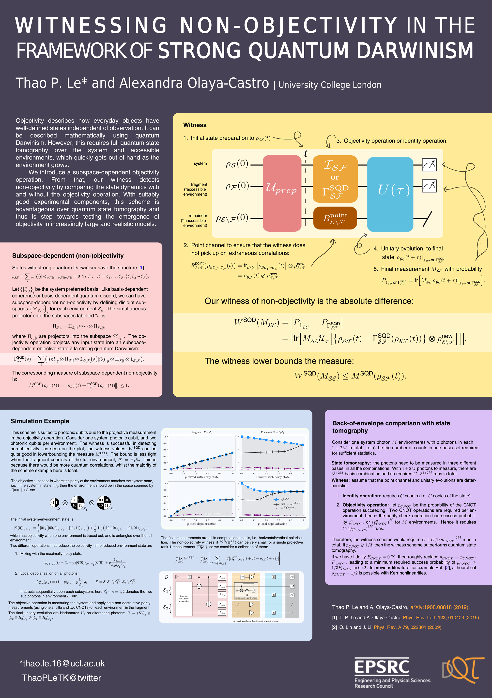

The following poster was presented at the Vienna Graduate Conference on Complex Quantum Systems 2019 (COQUS), Vienna, on the 28th - 30th October 2019.. The corresponding paper for this work is Witnessing non-objectivity in the framework of strong quantum Darwinism.

| University College London
*thao.le.16@ucl.ac.uk
twitter @ ThaoPLeTK
Objectivity describes how everyday objects have well-defined states independent of observation. It can be described mathematically using quantum Darwinism. However, this requires full quantum state tomography over the system and accessible environments, which quickly gets out of hand as the environment grows.
We introduce a subspace-dependent objectivity operation. From that, our witness detects non-objectivity by comparing the state dynamics with and without the objectivity operation. With suitably good experimental components, this scheme is advantageous over quantum state tomography and thus is step towards testing the emergence of objectivity in increasingly large and realistic models.
States with strong quantum Darwinism have the structure [1]:
\( \rho_{\mathcal{SX}} =\sum_{i}p_{i}|i\rangle\langle i|\otimes\rho_{\mathcal{X}|i},\quad\rho_{\mathcal{X}|i}\rho_{\mathcal{X}|j}=0\quad\forall i\neq j,\quad\mathcal{X}=\mathcal{E}_{1},\ldots,\mathcal{E}_{F},\left\{ \mathcal{E}_{1}\mathcal{E}_{2}\cdots\mathcal{E}_{F}\right\} \).
Let \(\left\{ |i\rangle _{\mathcal{S}}\right\} _{i} \) be the system preferred basis. Like basis-dependent coherence or basis-dependent quantum discord, we can have subspace-dependent non-objectivity by defining disjoint subspaces \(\left\{ \mathcal{H}_{\mathcal{E}_{k}|i}\right\} _{i} \) for each environment \(\mathcal{E}_{k}\). The simultaneous projectoronto the subspaces labelled “\(i\)” is:
\( \Pi_{\mathcal{F}|i} =\Pi_{\mathcal{E}_{1}|i}\otimes\cdots\otimes\Pi_{\mathcal{E}_{F}|i} \),
where \( \Pi_{\mathcal{E}_{k}|i} \) are projectors into the subspace \(\mathcal{H}_{\mathcal{E}_{k}|i}\). The objectivity operation projects any input state into an subspace-dependent objective state à la strong quantum Darwinism:
\( \Gamma_{\mathcal{SF}}^{\text{SQD}}\left(\rho\right)=\sum_{i}\left(|i\rangle \langle i |_{\mathcal{S}}\otimes\Pi_{\mathcal{F}|i}\otimes\mathbb{1}_{\mathcal{E}\backslash\mathcal{F}}\right)\rho\left(|i\rangle \langle i |_{\mathcal{S}}\otimes\Pi_{\mathcal{F}|i}\otimes\mathbb{1}_{\mathcal{E}\backslash\mathcal{F}}\right) \).
The corresponding measure of subspace-dependent non- objectivity is:
\( M^{\text{SQD}}\left(\rho_{\mathcal{SF}}\left(t\right)\right)=\left\Vert \rho_{\mathcal{SF}}\left(t\right)-\Gamma_{\mathcal{SF}}^{\text{SQD}}\left(\rho_{\mathcal{SF}}\left(t\right)\right)\right\Vert _{1}\leq1\).
\(\begin{eqnarray} R_{\mathcal{E}\backslash\mathcal{F}}^{\text{point}}\left(\rho_{\mathcal{S}\mathcal{E}_{1}\cdots\mathcal{E}_{N}}\left(t\right)\right) &=&\text{tr}_{\mathcal{E}\backslash\mathcal{F}}\left[\rho_{\mathcal{S}\mathcal{E}_{1}\cdots\mathcal{E}_{N}}\left(t\right)\right]\otimes\rho_{\mathcal{E}\backslash\mathcal{F}}^{\text{new}} \nonumber \\ &=&\rho_{\mathcal{SF}}\left(t\right)\otimes\rho_{\mathcal{E}\backslash\mathcal{F}}^{\text{new}}.\end{eqnarray} \)
\( P_{\mathbb{1}_{\mathcal{SF}}\text{or }\Gamma_{\mathcal{SF}}^{\text{SQD}}}=\text{tr}\left[M_{\mathcal{SE}}\left.\rho_{\mathcal{SE}}\left(t+\tau\right)\right|_{\mathbb{1}_{\mathcal{SF}}\text{or }\Gamma_{\mathcal{SF}}^{\text{SQD}}}\right]. \)
Figure: a circuit diagram of witnessing scheme. At time zero, there is a system, fragment ("accessible" environment)and remainder ("inaccessible" environment). A unitary \(\mathcal{U}_{prep}\) prepares the system and environment to some joint state \(\rho_{\mathcal{SE}}(t) \) at time \(t\). There is a point channel that acts only on the remainder environment. And there can either be an identity channel or an objectivity operation on the combined system-fragment. Then, there is a unitary evolution \( U(t)\) that acts on the full system-environment. Finally, there are local measurements on the system and fragment.
Our witness of non-objectivity is the absolute difference:
\( \begin{eqnarray}W^{\text{SQD}}\left(M_{\mathcal{SE}}\right) & =&\left|P_{\mathbb{1}_{\mathcal{SF}}}-P_{\Gamma_{\mathcal{SF}}^{\text{SQD}}}\right| \nonumber \\ &=&\left|\text{tr}\left[M_{\mathcal{SE}}\mathcal{U}_{\tau}\left[\left\{ \rho_{\mathcal{SF}}\left(t\right)-\Gamma_{\mathcal{SF}}^{\text{SQD}}\left(\rho_{\mathcal{SF}}\left(t\right)\right)\right\} \otimes\rho_{\mathcal{E}\backslash\mathcal{F}}^{\text{new}}\right]\right]\right|.\end{eqnarray} \)
The witness lower bounds the measure:
\( W^{\text{SQD}}\left(M_{\mathcal{SE}}\right)\leq M^{\text{SQD}}\left(\rho_{\mathcal{SF}}\left(t\right)\right). \)
This scheme is suited to photonic qubits due to the projective measurement in the objectivity operation. Consider one system photonic qubit, and two photonic qubits per environment. The witness is successful in detecting non-objectivity: as seen on the plot, the witness values, \(W^{\text{SQD}}\) can be quite good in lowerbounding the measure \(M^{\text{SQD}}\). The bound is less tight when the fragment consists of the full environment, \(\mathcal{F}=\mathcal{E}_{1}\mathcal{E}_{2}\): this is because there would be more quantum correlations, whilst the majority of the scheme example here is local.
Figure: Four plots showing the simulation results, examining when the fragment is either one environment, or two environments; and when the system-environment is mixed with the noisy state or undergoes local depolarisation. There are three lines on each plot: the measure of subspace-dependent non-objectivity; the combined maximum of the witness, and the single values of the witness at one computational measurement. We see that when the fragment is one environment, then the combined maximum of the witness perfectly matches the measure. When the fragment is two environments, the witness is under the measure. Regardless, the witness is able to detect non-objectivity.
The objective subspace is where the parity of the environment matches the system state, i.e. if the system in state \(|0\rangle_{\mathcal{S}}\) then the environment should be in the space spanned by \(\left\{ |00\rangle, |11\rangle\right\}\) etc.
Figure: Representation of the objective subspace, where if the system is on zero, then the environments (made up of two photons) should have even parity, while if the system is in state one, then the environments should have odd parity.
The initial system-environment state is
\(|\Psi\left(0\right)\rangle_{\mathcal{SE}_{1}\mathcal{E}_{2}}=\dfrac{1}{2}|0\rangle_{\mathcal{S}}\left(|00,00\rangle_{\mathcal{E}_{1}\mathcal{E}_{2}}+|11,11\rangle_{\mathcal{E}_{1}\mathcal{E}_{2}}\right)+\dfrac{1}{2}|1\rangle_{\mathcal{S}}\left(|10,10\rangle_{\mathcal{E}_{1}\mathcal{E}_{2}}+|01,01\rangle_{\mathcal{E}_{1}\mathcal{E}_{2}}\right),\)
which has objectivity when one environment is traced out, and is entangled over the full environment.
Two different operations that reduce the objectivity in the reduced environment state are
\(\rho_{\mathcal{SE}_{1}\mathcal{E}_{2}}\left(t\right)=\left(1-p\right)|\Psi\left(0\right)\rangle_{\mathcal{SE}_{1}\mathcal{E}_{2}}\langle\Psi\left(0\right)|+p\dfrac{\mathbb{1}_{\mathcal{S}\mathcal{E}_{1}\mathcal{E}_{2}}}{d_{\mathcal{S}}d_{\mathcal{E}_{1}}d_{\mathcal{E}_{2}}}. \)
\(\Lambda_{D,p}^{X}\left(\rho_{X}\right)=\left(1-p\right)\rho_{X}+p\dfrac{\mathbb{1}_{X}}{d_{X}}\rho,\qquad X=\mathcal{S},\mathcal{E}_{1}^{\left(1\right)},\mathcal{E}_{1}^{\left(2\right)},\mathcal{E}_{2}^{\left(1\right)},\mathcal{E}_{2}^{\left(2\right)},\)
that acts sequentially upon each subsystem, here \(\mathcal{E}_{1}^{\left(a\right)}\), \(a=1,2\) denotes the two sub photons in environment \(\mathcal{E}_{1}\) etc.The objective operation is measuring the system and applying a non-destructive parity measurements (using one ancilla and two CNOTs) on each environment in the fragment.
The final unitary evolution are Hadamards \(H_{2}\) on alternating photons: \(U=\left(H_{2}\right)_{\mathcal{S}}\otimes\left(\mathbb{1}_{2}\otimes H_{2}\right)_{\mathcal{E}_{1}}\otimes\left(\mathbb{1}_{2}\otimes H_{2}\right)_{\mathcal{E}_{2}}\).
The final measurements are all in computational basis, i.e. horizontal/vertical polarisation. The non-objectivity witness \(W^{\text{SQD}}\left(\Pi_{\boldsymbol{i}}^{\mathcal{SF}}\right)\) can be very small for a single projective rank-1 measurement \(\left\{ \Pi_{\boldsymbol{i}}^{\mathcal{SF}}\right\}\), so we consider a collection of them:
\(\max_{\left\{ M_{\mathcal{SF}}\right\} }W^{\text{SQD}} =\max_{\left\{ M_{\mathcal{SF}}\right\} }\left|\sum_{\Pi_{\boldsymbol{i}}^{\mathcal{SF}}\in\left\{ M_{\mathcal{SF}}\right\} }\text{tr}\left[\Pi_{\boldsymbol{i}}^{\mathcal{SF}}\left\{ \rho_{\mathcal{SE}}\left(t+\tau\right)-\rho_{\mathcal{SE}}^{\prime}\left(t+\tau\right)\right\} \right]\right| \).
Consider one system photon $M$ environments with \(2\) photons in each \(=1+2M\) in total. Let \(C\) be the number of counts in one basis set required for sufficient statistics.
State tomography: the photons need to be measured in three different bases, in all the combinations. With \(1+2M\) photons to measure, there are \(3^{1+2M}\) basis combination and so requires \(C\cdot3^{1+2M}\) runs in total.
Witness: assume that the point channel and unitary evolutions are deterministic.
Therefore, the witness scheme would require \(C+C\left(1/p_{CNOT}\right)^{2M}\) runs in total. If \(p_{CNOT}\gtrsim1/3\), then the witness scheme outperforms quantum state tomography.
If we have fidelity \(F_{CNOT}=0.79\), then roughly replace \(p_{CNOT}\rightarrow p_{CNOT}\cdot F_{CNOT}\), leading to a minimum required success probability of \(p_{CNOT}\geq1/3F_{CNOT}\approx0.42\) . In previous literature, for example Ref. [2], a theoretical \(p_{CNOT}=1/2\) is possible with Kerr nonlinearities.
Thao P. Le and A. Olaya-Castro: arXiv: 1908.08818 (2019).
[1] T. P. Le and A. Olaya-Castro, Phys. Rev. Lett. 122, 010403 (2019).
[2] Q. Lin and J. Li, Phys. Rev. A 79, 022301 (2019).
Funded by the EPSRC (Engineering and Physical Sciences Research Council), and part of DQT (UCL CDT in Delivering Quantum Technologies).
{kind=link}